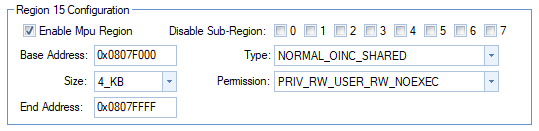

4.18. DMA
4.18.2. Description
This document explains how to configure a non-cacheable area to work with DMA.
4.18.3. Problem
The cache of the MCU must be activated, otherwise the performance hit is too high. But if DMA is used in conjunction with the cache, cache coherency problems arise. If a variable X is copied in the cache, it will not be updated in the main memory. Similarly, if X is written in the main memory, it will not be updated in the cache.
To solve this problem, a non cacheable area must be declared in the RAM. The arrays read/written by DMA must then be located in this area.
4.18.4. Using a non-cacheable area
4.18.4.1. Declaring a non-cacheable area
Region 3 defines the RAM used by the MCU. For DMA, the last region, region 15, will be used.
The corresponding configuration in HALCoGen is shown in Fig. 4.4.
Fig. 4.4 Non cacheable area in HALCoGen
The “type” option declares the area as non-cacheable.
4.18.4.2. Adapting the linker script
The next step is the adapt the linker script. In this example, the size of the
non-cacheable area is 4kB, or 0x1000. In the linker script, the initial
size declared for the RAM is 0x7F000. The size of the non-cacheable area
must be subtracted, so the new RAM size is 0x7E000.
The next region after RAM starts at 0x08008000. The start address of the
non-cacheable area is then 0x08008000 - 0x1000 = 0x08007000. The resulting
section of the linker script is
RAM (RW) : origin=0x08001000 length=0x0007E000
SHAREDRAM (RW) : origin=0x0807F000 length=0x00001000
The non-cacheable area is defined as SHAREDRAM.
In the SECTIONS part of the linker file, the following has to be added:
/* USER CODE BEGIN (4) */
.sharedRAM : {} > SHAREDRAM
/* USER CODE END */
4.18.4.3. Working with FreeRTOS
Care must be taken if working with FreeRTOS: the OS will override the properties of the area defined in HALCoGen.
To avoid this, the function vPortStoreTaskMPUSettings() has to be modified.
The code
xMPUSettings->xRegion[ portNUM_CONFIGURABLE_REGIONS - 1 ].ulRegionBaseAddress = 0x0807F000;
xMPUSettings->xRegion[ portNUM_CONFIGURABLE_REGIONS - 1 ].ulRegionSize = portMPU_SIZE_4KB | portMPU_REGION_ENABLE;
xMPUSettings->xRegion[ portNUM_CONFIGURABLE_REGIONS - 1 ].ulRegionAttribute = portMPU_PRIV_RW_USER_RW_NOEXEC | portMPU_NORMAL_OINC_SHARED;
has to be added. portNUM_CONFIGURABLE_REGIONS-1 means that the last user
region is used, as wished in the HALCoGen configuration.
4.18.4.4. Using the defined area in code
The variables to be put in the non-cacheable area simply have to be defined like this:
#pragma SET_DATA_SECTION(".sharedRAM")
uint16_t ltc_RxPecBuffer[LTC_N_BYTES_FOR_DATA_TRANSMISSION] = {0};
uint16_t ltc_TxPecBuffer[LTC_N_BYTES_FOR_DATA_TRANSMISSION] = {0};
#pragma SET_DATA_SECTION()